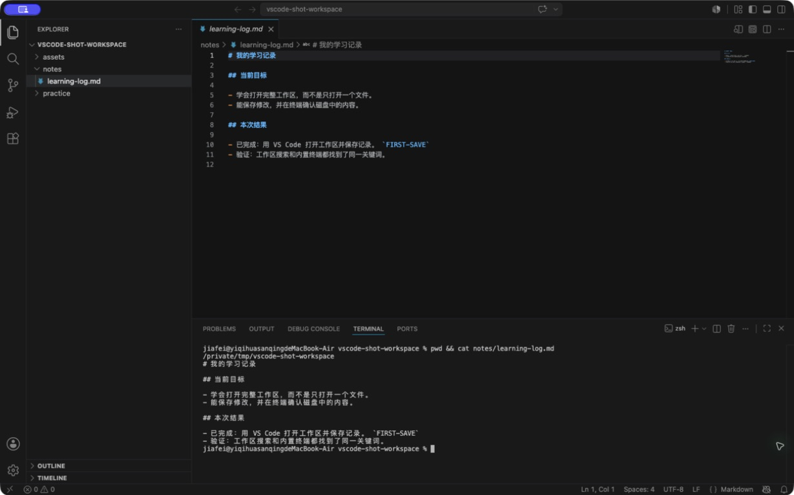

工程基础入门 · 第四课
编辑器：从安装 VS Code 开始¶
同一份记录，从三个地方都能找到¶
今天结束时，learning-log.md 会在三个地方出现：编辑区显示你的修改，工作区搜索找到你加的关键词，内置终端读出保存后的同一行。
三个地方对得上，说明你不只是“把字打进窗口”，而是真的找到了项目、改对了文件，并把内容写进了磁盘。
先认清四个区域¶

1 文件树 2 编辑区 3 内置终端 4 文件标签① 文件树¶
显示当前工作区中的真实目录和文件。这里改名、移动或删除，磁盘里的文件也会跟着变化。
② 编辑区¶
文件内容在这里打开和修改。屏幕上的文字变了，不代表磁盘里的文件已经保存。
③ 内置终端¶
它就是上一课用过的终端，只是放进了 VS Code。运行命令前仍要确认当前位置。
④ 文件标签¶
标签帮助你在已打开的文件之间切换。出现圆点时，通常表示当前修改还没有保存。
工作区是 VS Code 当前打开的一组文件夹。 这条路线先使用最常见的单文件夹工作区：把 learning-workspace 整个打开，而不是只打开里面的一个文件。
把 VS Code 找到并打开¶
这条路线统一推荐 VS Code，目的是让菜单、截图和排错步骤保持一致。以后换成 Cursor、Trae 或其他编辑器时，工作区、文件树、保存、搜索和终端这些概念仍然适用。
- 打开 VS Code 官方 Windows 安装页。
- 大多数个人电脑选择 User Setup；它只为当前用户安装，通常不需要管理员权限。
- 双击
VSCodeUserSetup-...exe，按安装程序提示完成安装。 - 按 Windows 键，输入
Visual Studio Code，点击应用。 - 看到左侧活动栏和中间欢迎页，就说明已经打开。
- 打开 VS Code 官方 macOS 安装页。
- 下载适合当前 Mac 的版本，打开下载文件，把
Visual Studio Code.app拖进“应用程序”。 - 按
Command + Space，输入Visual Studio Code，按 Return。 - 看到左侧活动栏和中间欢迎页，就说明已经打开。
按 VS Code 官方 Linux 安装说明选择发行版对应的软件包或软件源。安装后从应用列表搜索 Visual Studio Code。
只从官方页面下载
现在只安装 VS Code 本体，不从网盘或第三方下载站获取安装包，也不用一次装很多扩展。扩展能运行代码，等实际需要时再从可信发布者中选择。
打开整个 learning-workspace¶
前三课已经留下这棵目录树：
learning-workspace/
├── notes/
│ └── learning-log.md
├── practice/
└── assets/
在 VS Code 选择 File → Open Folder...：
- 找到
learning-workspace。 - 选中这个目录本身，不要进入
notes，也不要只双击learning-log.md。 - Windows 点击“选择文件夹”；macOS 点击“Open”。
- 看左侧文件树最上方的名字。
下面三项都出现，说明层级正确：
- 根目录名是
learning-workspace。 - 同时看见
notes、practice和assets。 - 展开
notes后能打开learning-log.md。
出现 Restricted Mode 或工作区信任提示
这是 VS Code 防止陌生项目自动执行代码的保护。自己在前几课创建的 learning-workspace 可以确认信任；来源不明的目录先保持 Restricted Mode，查看内容和来源后再决定。
改一行，保存，再重新打开¶
打开 notes/learning-log.md，在末尾加入：
## 编辑器检查
- 已完成：用 VS Code 打开工作区并保存记录。
先别急着保存，看看文件标签上是否出现圆点。然后按：
- Windows：
Ctrl + S - macOS：
Command + S
圆点消失后，关闭这个文件标签，再从文件树重新打开。刚才那行还在，说明内容已经写进磁盘。
如果只是看见新文字，却没有保存和重新打开，你还不能确定终端或下一个程序会读到它。
换成你的内容，再从两个地方找到它¶
把刚才那句话改成自己的记录，并加入一个不容易和别处重复的关键词，例如：
FIRST-SAVE-你的昵称
然后完成两次检查。
在工作区搜索¶
- 点击左侧放大镜，或者按
Ctrl/Command + Shift + F。 - 输入你的独特关键词。
- 确认结果来自
notes/learning-log.md，而不是另一个同名文件。
在内置终端读取¶
选择 Terminal → New Terminal，先确认位置，再读文件：
pwd
ls
cat notes/learning-log.md
Get-Location
Get-ChildItem -Name
Get-Content notes\learning-log.md
最后把三个地方对在一起：编辑区、搜索结果和终端输出都包含同一个关键词，而且文件路径一致。
找不到内容，先别重复创建¶
| 看到的现象 | 常见原因 | 先看哪里 | 回到正确状态 |
|---|---|---|---|
| 左侧只有一个文件 | 只打开了文件，没有打开文件夹 | 窗口标题和文件树顶部 | 重新用 Open Folder 打开工作区 |
只看见 learning-log.md |
打开了 notes，层级太深 |
文件树根目录名 | 重新选择它的父目录 learning-workspace |
| 搜索不到新关键词 | 文件未保存，或只搜索了当前文件 | 标签圆点和左侧搜索入口 | 保存后使用工作区搜索 |
| 终端读不到最新内容 | 文件未保存，或终端位置不对 | 圆点、pwd / Get-Location |
保存，再回到项目根目录读取 |
| 不能打开内置终端 | 工作区仍受限，或终端面板被隐藏 | Restricted Mode 提示和 Terminal 菜单 | 只对可信目录启用信任，再新建终端 |
挑一个安全的问题故意试一次，例如只打开 notes。不要新建第二份记录；先根据根目录名发现问题，再重新打开正确目录。
在 learning-log.md 里记下：当时看见什么、先检查哪里、怎样确认已经恢复。以后遇到“代码明明改了，运行却没变化”，这套顺序仍然有用。
工程学习工作台 v0.4¶
现在，同一个工作区已经能从文件管理器、系统终端和编辑器三种入口找到：
| 原来会什么 | 这节课增加什么 | 保留什么 | 下一课怎样继续 |
|---|---|---|---|
| 用终端定位和读取文件 | 用 VS Code 打开、修改、保存、搜索并复核 | 更新后的学习记录、独特关键词和一次排错记录 | 用 Markdown 把记录整理成清楚的标题、列表、代码和链接 |
请保留整个 learning-workspace。后面的 Python 文件会进入 practice，截图或图解会进入 assets，学习与排错记录继续放在 notes。
找不到菜单
先确认 VS Code 窗口在最前面。macOS 的应用菜单位于屏幕顶部，Windows 菜单位于应用窗口顶部。Ctrl/Command + Shift + P 可以打开命令面板，但第一遍更建议沿菜单完成，先建立位置感。
编辑器没有替你管理文件
VS Code 文件树显示的是磁盘内容。重命名、移动和删除会改变真实文件；版本历史、撤回和团队协作要到后面的 Git 课程再解决。
求职时怎样展示
“我用过 VS Code”很难证明能力。更有用的是展示一个结构清楚的工作区，并说明你怎样找到文件、保存修改、运行命令，以及路径对不上时先检查什么。
完成检查¶
- 能解释工作区、文件树、编辑区、文件标签和内置终端的关系。
- 已从官方页面安装并打开 VS Code，没有依赖不明来源安装包。
- 能打开完整的
learning-workspace，而不是只打开单个文件或notes。 - 能识别未保存状态，并通过重新打开确认内容已经写入磁盘。
- 工作区搜索和内置终端都能找到自己的独特关键词。
- 已故意打开错一层目录，并靠根目录名恢复。
- 学习记录保存了修改结果和一次排错过程。
来源与版本¶
- 适用环境：Visual Studio Code Stable 桌面版；Windows 11、当前受支持的 macOS，以及常见 Linux 桌面发行版。
- 安装：VS Code on Windows、VS Code on macOS、VS Code on Linux。
- 工作区与打开目录：What is a VS Code workspace?。
- 工作区信任与 Restricted Mode：Workspace Trust。
- 界面与内置终端：User interface。
- 验证方式：使用原创截图中的受控工作区，并在编辑区、搜索和终端中核对同一个独特关键词。
- 核查日期：2026-07-17。
下一步¶
进入 Markdown。下一节会把已经保存的纯文字记录整理成带标题、列表、代码块和链接的文档。